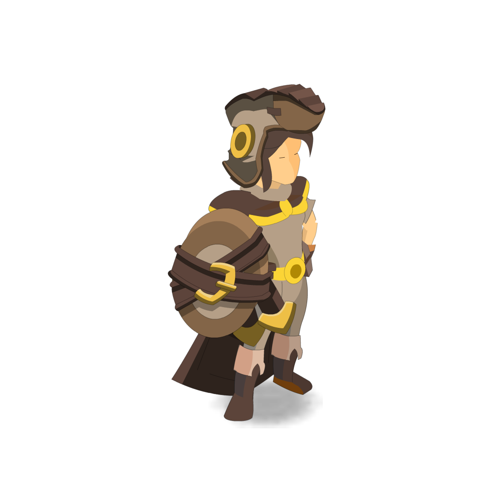

Calculateur de Craft
Entrez vos ressources et la capacité de vos pods pour savoir combien d'objets vous pouvez fabriquer sans dépasser la limite.
Ressources nécessaires
Résultats
Ajoutez vos données et cliquez sur "Calculer" pour voir les résultats.
Optimisez vos crafts dans Dofus en maximisant l'utilisation de vos pods disponibles. Cet outil simple et rapide calcule combien d'objets vous pouvez fabriquer en fonction des ressources nécessaires et de leur poids. Parfait pour éviter les surcharges de pods !
Entrez vos ressources et la capacité de vos pods pour savoir combien d'objets vous pouvez fabriquer sans dépasser la limite.
Ajoutez vos données et cliquez sur "Calculer" pour voir les résultats.